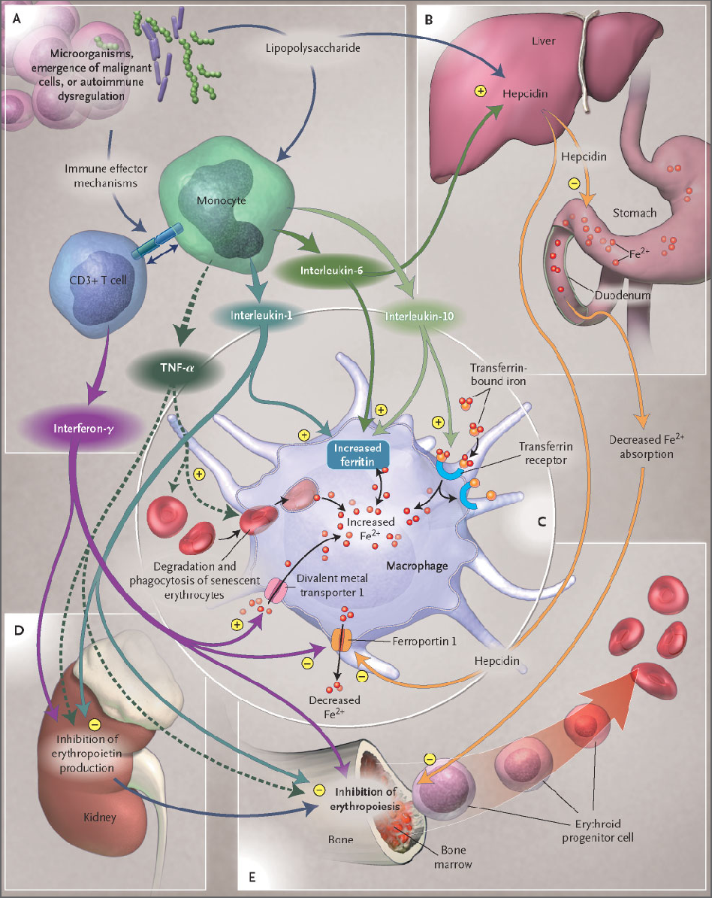
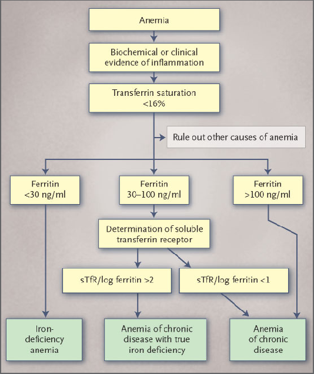

本ページで使用する略語一覧
| ACD | Anemia of Chronic Disease — 慢性疾患の貧血（＝慢性炎症に伴う貧血 anemia of inflammation） |
| IDA | Iron-Deficiency Anemia — 鉄欠乏性貧血 |
| RES | Reticuloendothelial System — 細網内皮系（マクロファージ系） |
| ヘプシジン | Hepcidin — 鉄代謝を制御する25アミノ酸の急性期蛋白 |
| DMT1 | Divalent Metal Transporter 1 — 二価金属輸送体1（鉄取り込み） |
| フェロポルチン | Ferroportin — 細胞からの鉄排出蛋白（ヘプシジンが抑制） |
| TNF-α | Tumor Necrosis Factor α — 腫瘍壊死因子α |
| IL | Interleukin — インターロイキン（IL-1・IL-6・IL-10 など） |
| IFN-γ | Interferon γ — インターフェロンγ |
| LPS | Lipopolysaccharide — リポ多糖（グラム陰性菌内毒素） |
| EPO | Erythropoietin — エリスロポエチン |
| ESA | Erythropoietic / Erythropoiesis-Stimulating Agents — 赤血球造血刺激因子製剤（エポエチン・ダルベポエチン） |
| sTfR | Soluble Transferrin Receptor — 可溶性トランスフェリン受容体 |
| BFU-E | Erythroid Burst-Forming Units — 赤芽球バースト形成単位（早期赤芽球前駆細胞） |
| CFU-E | Erythroid Colony-Forming Units — 赤芽球コロニー形成単位（後期赤芽球前駆細胞） |
| PRCA | Pure Red-Cell Aplasia — 赤芽球癆 |
| CKD / ESRD | Chronic Kidney Disease / End-Stage Renal Disease — 慢性腎臓病 / 末期腎不全 |
| RA | Rheumatoid Arthritis — 関節リウマチ |
| IBD | Inflammatory Bowel Disease — 炎症性腸疾患 |
| MDS | Myelodysplastic Syndrome — 骨髄異形成症候群 |
| Hct | Hematocrit — ヘマトクリット |
SECTION 1 慢性疾患の貧血とは — 「慢性炎症に伴う貧血」という呼び名
定義
慢性疾患の貧血（ACD）は、急性または慢性の免疫活性化を伴う患者に生じる貧血で、鉄欠乏性貧血に次いで2番目に頻度の高い貧血である。感染症・悪性腫瘍・自己免疫疾患・慢性拒絶反応・慢性腎臓病など、共通して免疫が活性化する病態で発症するため、近年では「慢性炎症に伴う貧血（anemia of inflammation）」とも呼ばれる。
ACDは免疫が駆動する貧血である。サイトカインと細網内皮系（RES）の細胞が、①鉄代謝（iron homeostasis）、②赤芽球前駆細胞の増殖、③エリスロポエチン（EPO）の産生、④赤血球の寿命、という4つの過程に変化を起こし、これらが合わさって貧血が形成される。
貧血を悪化させる併存因子
基礎疾患そのものが造血を障害する経路は複数ある。腫瘍細胞の骨髄浸潤、あるいはHIV感染・C型肝炎・マラリアにみられる微生物の関与によって造血が影響を受ける。腫瘍細胞は炎症性サイトカインやフリーラジカルを産生して赤芽球前駆細胞を傷害する。
さらに、出血エピソード、ビタミン欠乏（コバラミン・葉酸）、脾機能亢進、自己免疫性溶血、腎機能障害、放射線・化学療法そのものなども貧血を増悪させうる。ACDの診断にあたっては、これら併存する原因を見落とさないことが重要である。
SECTION 2 基礎疾患と頻度 — どの病態で起こるか
ACDの基礎疾患と推定有病率（Table 1）
ACDを来す代表的な病態と、それぞれにおける貧血の推定有病率を以下に示す。なお、ACDを伴う全病態で疫学データが揃っているわけではなく、貧血の有病率と重症度は基礎疾患の進行度と相関し、高齢になるほど増加する傾向がある。
| 基礎疾患カテゴリー | 推定有病率 | 含まれる病態 |
|---|---|---|
| 感染症 急性・慢性 | 18–95% | ウイルス感染（HIV感染を含む）、細菌、寄生虫、真菌 |
| 悪性腫瘍 | 30–77% | 血液腫瘍、固形腫瘍 |
| 自己免疫疾患 | 8–71% | 関節リウマチ、全身性エリテマトーデスおよび結合組織疾患、血管炎、サルコイドーシス、炎症性腸疾患（IBD） |
| 固形臓器移植後の慢性拒絶 | 8–70% | 移植後の慢性貧血 |
| 慢性腎臓病＋炎症 | 23–50% | CKD・透析患者 |
＊悪性腫瘍での有病率は治療・年齢に左右される。ある研究では高齢の癌患者で男性77%・女性68%が貧血を呈した。別の研究では固形腫瘍患者の放射線治療前41%・治療後54%に貧血が観察された。
慢性腎臓病に伴う貧血はACDの特徴の一部を共有するが、腎不全によるEPO産生の低下と、蓄積する尿毒症性毒素の抗増殖作用が重要な役割を果たす点が異なる。さらに末期腎不全（ESRD）では、透析膜による免疫細胞の接触活性化や頻回の感染エピソードから慢性的な免疫活性化が生じ、ACDに典型的な鉄代謝の変化を呈する。
SUMMARY 第1章のキーメッセージ
3つの中心メカニズム（Fig. 1）
ACDの病態は、①鉄代謝の破綻（鉄がRESに隔離され、赤芽球が利用できる鉄が制限される）、②赤芽球前駆細胞の増殖障害、③EPO応答の鈍化、の3つに集約される。微生物の侵入・悪性細胞の出現・自己免疫の乱れがT細胞と単球を活性化し、IFN-γ・TNF-α・IL-1・IL-6・IL-10などのサイトカインを産生することが起点となる。

SECTION 1 鉄代謝の破綻 — ヘプシジンが鍵
鉄がRESに隔離される
ACDの特徴は鉄代謝の障害であり、RES細胞内への鉄の取り込み・貯留が亢進する。その結果、循環中から鉄がRESの貯蔵部位へ転送され、赤芽球前駆細胞が利用できる鉄が制限される「鉄制限性造血（iron-restricted erythropoiesis）」が生じる。
炎症性サイトカインのIL-1とTNF-αをマウスに投与すると、低鉄血症と貧血が生じる。これはマクロファージや肝細胞での鉄貯蔵蛋白フェリチンのサイトカイン誘導性合成と関連する。慢性炎症ではマクロファージによる鉄の獲得は、主に赤血球貪食（erythrophagocytosis）と、二価金属輸送体DMT1による二価鉄（Fe²⁺）の膜輸送を介して起こる。
輸送体レベルの制御
IFN-γ・LPS・TNF-αはDMT1の発現を上げて活性化マクロファージへの鉄取り込みを増加させる。同時に、これらの炎症刺激はフェロポルチン（鉄排出蛋白）の発現を低下させ、マクロファージからの鉄放出を阻害して鉄を貯留させる。フェロポルチンは十二指腸吸収上皮から循環へ吸収された二価鉄を移送する役割を担うと考えられている。さらに抗炎症性サイトカインのIL-10も、トランスフェリン介在性の鉄獲得とフェリチン発現の翻訳促進を通じて貧血を起こしうる。
ヘプシジンの発見
25個のアミノ酸からなる鉄調節性の急性期蛋白ヘプシジンの同定により、免疫応答・鉄代謝・ACDの関係が解明された。ヘプシジン発現はLPSとIL-6で誘導され、TNF-αでは抑制される。マウスでヘプシジンを過剰発現させると重度の鉄欠乏性貧血が生じ、逆にヘプシジン欠損マウスでは炎症を起こしても低鉄血症にならなかった。
この知見は、ACDで起こる十二指腸での鉄吸収低下とマクロファージからの鉄放出阻害に、ヘプシジンが中心的に関与することを示唆する。IL-6とヘプシジンによる低鉄血症の誘導は数時間以内に起こり、IL-6欠損マウスでは観察されない。最近同定された遺伝子ヘモジュベリン（hemojuvelin）もヘプシジンと協調して作用する可能性がある。
SECTION 2 赤芽球前駆細胞の増殖障害
サイトカインによる直接抑制
ACDでは赤芽球前駆細胞（BFU-E＝赤芽球バースト形成単位、CFU-E＝赤芽球コロニー形成単位）の増殖・分化が障害される。IFN-α・β・γ、TNF-α、IL-1がこれらの増殖を抑制し、なかでもIFN-γが最も強力な抑制因子とされ、ヘモグロビン濃度・網赤血球数と逆相関する。
機序として、セラミド形成に一部関連したアポトーシスの誘導、前駆細胞上のEPO受容体発現の低下、EPOの産生・活性の障害、幹細胞因子（stem-cell factor）など他の造血促進因子の発現低下が関与する。さらにサイトカインは、近傍のマクロファージ様細胞に一酸化窒素やスーパーオキシドなどのフリーラジカルを産生させ、前駆細胞に直接的な毒性を及ぼす。
SECTION 3 EPO応答の鈍化
貧血の程度に見合わないEPO産生
EPOは赤芽球増殖を中心的に制御する。EPO発現は組織酸素化・ヘモグロビン値と逆相関し、貧血の程度（linear）とEPO応答（log）の間には半対数関係がある。ACDでは多くの病態で、EPO応答が貧血の程度に対して不十分（inadequate）となる。IL-1とTNF-αはin vitroでEPO発現を直接抑制し、これは少なくとも一部はサイトカイン介在性の活性酸素種の形成によると考えられる。
さらに、赤芽球前駆細胞のEPOへの反応性は基礎疾患の重症度・循環サイトカイン量と逆相関する。高濃度のIFN-γやTNF-α存在下では、CFU-E形成の回復にはるかに多量のEPOが必要となる。加えて、EPO受容体の並行した発現低下と鉄利用の制限も応答を鈍らせる。炎症時の赤血球貪食亢進により赤血球寿命も短縮する。
病態生理因子のまとめ（Table 2）
ACDの病態生理を構成する主要因子と機序を以下に整理する。
| 病態の柱 | 主要因子 | 機序・帰結 |
|---|---|---|
| 鉄代謝の破綻 | TNF-α / IL-1 | フェリチン転写を誘導 → RES内の鉄貯蔵が増加（低鉄血症・高フェリチン血症） |
| 鉄代謝の破綻 | IL-6 | フェリチン転写・翻訳を誘導、ヘプシジン形成を刺激 → ヘプシジンが鉄吸収とマクロファージからの鉄排出を低下 |
| 鉄代謝の破綻 | IFN-γ / LPS | DMT1合成を刺激しフェロポルチン1発現を低下 → マクロファージで鉄取り込み増加・鉄再循環阻害 |
| 鉄代謝の破綻 | IL-10 | トランスフェリン受容体発現を誘導しフェリチン翻訳を刺激 → トランスフェリン結合鉄の取り込み・貯蔵増加 |
| 鉄代謝の破綻 | 赤血球貪食（erythrophagocytosis） | TNF-αで傷害された赤血球の取り込み増加 → 赤血球寿命短縮、鉄がマクロファージ内に制限 |
| 造血障害 | IFN-γ / IL-1 / TNF-α | CFU-E・BFU-Eの増殖分化を阻害、アポトーシス誘導、EPO受容体発現低下、幹細胞因子形成低下 |
| 造血障害 | 低鉄血症 | 鉄のRESへの転送と鉄吸収低下により発生 → ヘム生合成障害・EPO反応性低下・CFU-E増殖低下 |
| EPO応答鈍化 | IL-1 / TNF-α | EPO転写を低下、ラジカル介在性にEPO産生細胞を傷害 → 循環EPO低下 |
| EPO応答鈍化 | IFN-γ / IL-1 / TNF-α | 前駆細胞のEPO反応性を障害（EPO受容体発現低下、シグナル伝達への干渉の可能性） |
SUMMARY 第2章のキーメッセージ
SECTION 1 ACDの血球像と鉄指標 — IDAとの鑑別
典型的な血球像
ACDは正色素性・正球性（normochromic, normocytic）の貧血で、特徴的に軽度（ヘモグロビン値 9.5 g/dL）から中等度（8 g/dL）にとどまる。網赤血球数は低く、赤血球産生の低下を示す。併存する出血、薬剤の影響、サラセミアのようなヘモグロビン合成の先天異常があると、確定診断が難しくなることがある。
軽度貧血の目安
中等度貧血の目安
網赤血球 低値
ACDとIDAの病態の違い
ACDの評価では、鉄欠乏性貧血（IDA・通常は低色素性・小球性）を除外するために全身鉄の状態を確認する必要がある。IDAが「絶対的鉄欠乏」であるのに対し、ACDの病態は多因子性で、鉄がRESに獲得されることによる「機能的低鉄血症」である。
ACD・IDAのいずれでも血清鉄とトランスフェリン飽和度は低下する。ただし両者でトランスフェリンの挙動が異なる。IDAではトランスフェリン（鉄輸送蛋白）の血清濃度が増加するため飽和度がより低くなりうるのに対し、ACDではトランスフェリン値は正常〜低下にとどまる。
フェリチンの解釈
フェリチンは鉄貯蔵のマーカーとして用いられ、15 ng/mLが一般に鉄貯蔵の枯渇を示す値とされる。ただし、複数集団の検討では30 ng/mLのほうがIDAに対するより良い陽性的中率（92〜98%）を示した。一方ACDでは、免疫活性化に伴うRES内での鉄貯蔵・貯留の増加を反映し、フェリチン値は正常〜増加となる。
SECTION 2 可溶性トランスフェリン受容体（sTfR）と鉄欠乏の合併
sTfRとsTfR/log フェリチン比
可溶性トランスフェリン受容体（sTfR）は膜受容体の切断断片で、造血に利用できる鉄が低下する鉄欠乏で増加する。一方ACDでは、炎症性サイトカインがトランスフェリン受容体発現を抑制するため、sTfR値は正常範囲と有意差がない。この性質を利用して、ACD単独（フェリチン正常〜高値＋sTfR低値）と、鉄欠乏を合併したACD（フェリチン低値＋sTfR高値）を鑑別できる。
sTfR/log フェリチン比も有用で、比 < 1 はACDを、比 > 2 はACDに絶対的鉄欠乏が合併した状態を示唆する（Table 3）。低色素性赤血球の割合や網赤血球ヘモグロビン含量の測定も、ACDに合併する鉄制限性造血の検出に役立つ。ACDに鉄欠乏を合併した患者は、ACD単独より小球性赤血球が多く、貧血がより重症になる傾向がある。
血清指標による鑑別（Table 3）
ACD・IDA・両者合併を血清指標で鑑別する。値はそれぞれの正常値に対する相対的変化を示す。
| 指標 | ACD | IDA | 両者合併 |
|---|---|---|---|
| 血清鉄 | 低下 | 低下 | 低下 |
| トランスフェリン | 低下〜正常 | 増加 | 低下 |
| トランスフェリン飽和度 | 低下 | 低下 | 低下 |
| フェリチン | 正常〜増加 | 低下 | 低下〜正常 |
| sTfR | 正常 | 増加 | 正常〜増加 |
| sTfR / log フェリチン比 | 低い（<1） | 高い（>2） | 高い（>2） |
| サイトカイン値 | 増加 | 正常 | 増加 |
SECTION 3 EPO測定の使いどころ
EPO測定が意味を持つ場面
EPO値の測定が有用なのは、ヘモグロビン値が10 g/dL未満の貧血患者に限られる。これより高いHb濃度ではEPO値は正常範囲にとどまるためである。Hb < 10 g/dL でEPO値を解釈する際も、貧血の程度を考慮する必要がある。
EPO値はESA治療への反応性の予測にも用いられてきた。組み換えヒトEPO（エポエチン）で2週間治療した後、血清EPO値 > 100 U/L またはフェリチン > 400 ng/mL は、化学療法を併用していない癌患者の88%で治療無反応を予測した。ただしこの予測因子は化学療法中の癌患者では検証されておらず、その場合はヘモグロビン値や網赤血球数の経時変化がエポエチンへの反応を示す指標となる。
SECTION 4 鑑別診断アルゴリズム（Fig. 2）
IDA・ACD・鉄欠乏を合併したACDを鑑別するためのアルゴリズムを示す。貧血に炎症の生化学的・臨床的所見があり、トランスフェリン飽和度が低い場合に、フェリチンとsTfR/log フェリチン比で分岐する。

SUMMARY 第3章のキーメッセージ
SECTION 1 治療の根拠 — 予後と目標ヘモグロビン
なぜ貧血を補正するか
ACD治療の根拠は2点に基づく。第一に、貧血そのものが有害でありうる（全身の酸素供給を保つため心拍出量の代償的増加を要する）。第二に、貧血は多様な病態で予後不良と関連する。したがって中等度の貧血は補正が望ましく、特に65歳超の患者や、冠動脈疾患・肺疾患・CKDなどの追加リスク因子をもつ患者で意義が大きい。透析中の腎不全患者や化学療法中の癌患者では、Hb 12 g/dL までの補正がQOL改善と関連する。
貧血と予後 — 透析患者のデータ
貧血は癌・CKD・うっ血性心不全など多くの病態で比較的不良な予後と関連する。約10万人の血液透析患者を対象とした後ろ向き研究では、Hb 8 g/dL以下は 10〜11 g/dL と比べ死亡オッズが約2倍であった。その後の解析では、Hct を 33〜36% に維持した患者で死亡リスクが最も低かった。この知見が、目標Hb 11〜12 g/dL を推奨する癌・CKDの貧血管理ガイドラインの基盤となった。
死亡オッズ（vs 10–11）
Hct（透析患者）
推奨目標Hb
過剰補正は有害 — 正常Hct を目指さない
ただし正常Hct を目標とすることが最適とは限らない。透析患者を対象に、正常Hct（>42%）と低Hct（>30%）をEPO＋静注鉄デキストランで目指す前向き多施設試験は、高Hct群で死亡が増加したため中止された。高Hct群はEPO・静注鉄をより高用量で投与されていた。鉄貯蔵と罹患・死亡の関連は、透析患者の感染症や男性の冠動脈アウトカムをめぐり議論が続いている。
SECTION 2 治療選択肢の全体像（Table 4）
基礎疾患の治療が第一選択
可能な場合、基礎疾患の治療がACDに対する最良の治療アプローチである。たとえば関節リウマチで抗TNF抗体療法を受けた患者ではヘモグロビン値の改善が示されている。基礎疾患の治療が困難な場合に、代替戦略が必要となる。
| 治療 | ACD | 真の鉄欠乏を合併したACD |
|---|---|---|
| 基礎疾患の治療 | あり | あり |
| 輸血＊ | あり | あり |
| 鉄補充 | なし | あり† |
| ESA（赤血球造血刺激製剤） | あり‡ | 鉄に反応しない患者で あり |
＊重症・致死的貧血の短期補正用。輸血の免疫修飾作用については議論がある。
†絶対的鉄欠乏を伴うACDの補正に鉄は適応となるが、基礎疾患の経過への鉄の影響を調べた前向き研究のデータはない。
‡貧血の過剰補正（Hb >12 g/dL）は有害となりうる。一部の腫瘍細胞のEPO受容体発現の臨床的意義は今後の検討課題。
SECTION 3 輸血
迅速かつ確実、しかし短期補正に限る
輸血は迅速・確実な治療として広く用いられる。特に重症貧血（Hb <8.0 g/dL）や致死的貧血（Hb <6.5 g/dL）、とりわけ出血を伴う合併症で増悪した場合に有用である。貧血を伴う心筋梗塞患者では輸血が生存率の上昇と関連したが、一方で集中治療を要する患者では輸血が多臓器不全・死亡率上昇と関連したとの報告もある。輸血が免疫系を修飾し臨床的に重要な有害作用を起こすかは未確定である。
SECTION 4 鉄療法 — 「ACD単独には使わない」
経口鉄は吸収が悪い・機能的鉄欠乏とは
経口鉄は十二指腸での吸収が低下しているため吸収が悪い。吸収された鉄も、サイトカイン介在性に鉄がRESへ転送されるため、一部しか造血部位に到達しない。一方、ESA治療中の強い造血状態では「機能的鉄欠乏」が生じ、トランスフェリン飽和度とフェリチンがベースラインから50〜75%低下する。静注鉄は、化学療法中の癌患者や透析患者でESAへの反応率を高めることが示されている。
鉄を「使う／使わない」の判断
現在のデータでは、絶対的鉄欠乏を合併したACDの患者には鉄補充を行うべきである。また、機能的鉄欠乏のためESAに反応しない患者にも鉄補充を考慮する。この状況では、鉄は病原体ではなく赤血球系で吸収・利用されやすく、感染合併症なくHbが上昇する。
他方、鉄療法が有益な場合もある。TNF-α形成の抑制を介して、鉄療法が関節リウマチや末期腎不全の疾患活動性を低下させる可能性が示唆されている。また炎症性腸疾患で貧血を伴う患者は、非経口鉄療法によくHb上昇で反応する。
SECTION 5 ESA（赤血球造血刺激製剤）
適応と反応率
ESAは現在、化学療法中の癌患者、CKD患者、骨髄抑制療法中のHIV感染患者での使用が承認されている。ACDのESA反応率は病態で大きく異なり、骨髄異形成症候群（MDS）で25%、多発性骨髄腫で80%、関節リウマチ・CKDで最大95%である。治療効果はサイトカインの抗増殖作用への拮抗と、赤芽球前駆細胞での鉄取り込み・ヘム生合成の刺激による。したがってESAへの不良な反応は、炎症性サイトカインの高値と鉄利用性の低下に関連する。
ESA反応率
ESA反応率
ESA反応率
3つの製剤と赤芽球癆（PRCA）
現在3種のESAが利用可能で、エポエチンα・エポエチンβ・ダルベポエチンαがあり、製剤上の修飾・受容体結合親和性・血清半減期が異なる。ヒト血清アルブミン非添加のEprex（エポエチンα）製剤に関連して、赤芽球癆（PRCA）の懸念が生じた。1998〜2004年に191例のエポエチン関連PRCAが同定されたのに対し、1988〜1998年はわずか3例であった。
| 製剤 | PRCA発生率 （曝露補正・/10万患者年） |
|---|---|
| Eprex（エポエチンα・ヒト血清アルブミン非添加） | 18 |
| Eprex（血清アルブミン添加） | 6 |
| エポエチンβ | 1 |
| Epogen（エポエチンα） | 0.2 |
Eprexの適切な保管・取り扱い・投与手順を導入後、曝露補正発生率は世界全体で83%減少した。
腫瘍をめぐる懸念 — 過剰補正の害
ESAの短期効果（貧血補正・輸血回避）は確立しているが、基礎疾患の経過への影響のデータは乏しい。EPO受容体は乳腺・卵巣・子宮・前立腺・肝細胞・腎の癌細胞や骨髄系細胞株に存在する。エポエチンの効果については相反する報告があるが、転移性乳癌患者でエポエチンの臨床経過への影響を調べた研究は、死亡が高い傾向のため中止された。
頭頸部腫瘍の放射線治療患者を対象に、目標Hb（女性 >13 g/dL、男性 >14 g/dL）への補正が局所腫瘍制御を改善するか検討した二重盲検前向き研究では、エポエチン群の再発率がプラセボ群より高かった。現在の知見では、ESAを受ける患者の目標Hbは11〜12 g/dLとすべきで、正常Hb値への過剰補正も不十分な治療も、いずれも不良な臨床経過と関連していた。
ESA治療のモニタリング
ESA開始前に鉄欠乏を除外する（Fig. 2）。反応のモニタリングは、治療開始4週後にHbを測定し、以後2〜4週間隔で評価する。
開始前：鉄欠乏を除外する（Fig. 2のアルゴリズム）。
4週後：Hbを測定。以後 2〜4週ごとに評価する。
Hb上昇 <1 g/dL なら：鉄の状態を再評価し、鉄補充を考慮する。
鉄制限性造血がなければ：ESA用量を50%増量する。
Hb 12 g/dL 到達で：用量を調整する。鉄欠乏のない状態で最適用量8週後も反応がなければ「ESA無反応」と判断する。
SUMMARY 第4章のキーメッセージ
SECTION 1 到達点と今後の課題
病態理解が治療戦略を拓いた
ACDの病態生理の理解の進展（鉄代謝の障害、赤芽球前駆細胞の増殖障害、貧血に対するEPO応答の鈍化）が、新たな治療戦略を可能にした。これには基礎疾患の治療、ESA・鉄・輸血の使用が含まれる。一方で、貧血管理が基礎疾患に与える影響を、明確なエンドポイントを定めて評価する前向き対照研究が必要であり、一部腫瘍細胞のEPO受容体発現の臨床的意義の解析も求められる。
将来の戦略として、内因性EPO形成を誘導する鉄キレート療法、RES内の鉄貯留を打破するヘプシジン拮抗薬、炎症条件下で造血を効果的に刺激しうるホルモン・サイトカインが挙げられる。罹患・死亡の改善と相関するエンドポイントを、適切に設計された前向き研究で同定することが、最適な治療レジメンの確立に不可欠である。
SUMMARY 第5章のキーメッセージ
出典：Weiss G, Goodnough LT. Anemia of Chronic Disease. N Engl J Med 2005;352:1011-23.
DOI：https://doi.org/10.1056/NEJMra041809
本資料は教育目的で作成したサマリーです。診断・治療方針の決定には必ず原典を参照してください。
制作：ICU 関谷